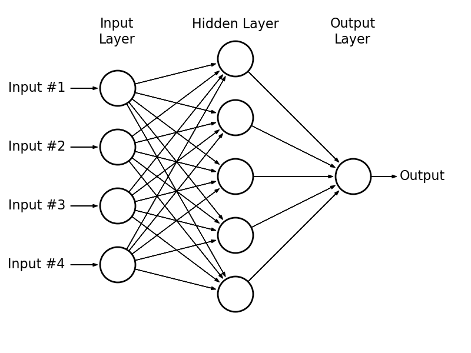

Presently, most deep neural networks are trained using GPUs due to the enormous number of parallel computations that they can perform. Without the speed-ups provided by GPUs, deep neural netwroks could take days or even weeks to train on a single machine. However, using GPUs can be prohitive for several reasons
- GPUs are expensive, both to buy and to rent.
- Most GPUs can only hold a relatively small amount of data in memory.
- CPU-to-GPU data transfer is very slow. Depending on your application it can be so slow that it actually negates the speed-up that the GPU provides.
- The CUDA GPU programming library is written in low-level C which many programmers are not experienced with (however there are many deep learning libraries written in high level languages with GPU capabilities e.g. Theano, Torch, Caffe, etc.).
DistBelief is a framework for training deep neural networks that avoids GPUs entirely (for the above reasons) and instead performs parallel computing with clusters of commodity machines. DistBelief was first presented in the 2012 paper "Large Scale Distributed Deep Networks" by Dean et al. In this paper, the GraphLab distributed computing framework was used to implement DistBelief. As we shall see later in this post, DistBelief relies heavily on asynchronous message passing which makes the Akka actor framework a suitable alternative. This post will describe how to implement the DistBelief framework using Akka (all code is in this github repo). This post will be divided into five sections
- A brief overview of how neural networks are trained using the backpropagation algorithm.
- A brief overview of how Akka handles asynchronous message passing.
- How the DistBelief framework trains deep neural networks using the distributed, asynchronous Downpour SGD algorithm.
- How Downpour SGD can be implemented using Akka.
- Finally, a demo applying DistBelief to the classic XOR function problem.
Let's get started!
1. The Backpropagation Algorithm
This section is only meant to be a brief overview of the backpropagation algorithm (there are a multitude of online resources available if you want to learn more). Consider the following 3-layer neural network.

The 3 layers are called the input layer, the hidden layer and the output layer. Each layer consists of a number of nodes that are called neural units. Each neural unit in the input layer is connected to every neural unit in the hidden layer via a weight (these are illustrated by the arrows in the above diagram). The neural units in the input layer correspond to the elements of the input vector for a given training example. The input to a neural unit in the hidden layer is the weighted sum of its inputs coming from the input layer. This weighted sum is then passed through a non-linearity function (e.g. sigmoid, tanh, reLu, etc.) to get the output of the neural unit. The process is then repeated between the hidden and output layers to get the final output/prediction. In the above example, the input is a 4-dimensional vector and the output is a scalar.
Training a neural network refers to the process of finding the optimal layer weights that map the inputs to the outputs in a given data set. This is done via the backpropagation algorithm which consists of two steps.
- A forward pass to compute the output for a given input with the current network weights which gives us the predicted output. We compare the predicted output to the actual output to get the prediction error.
- A backward pass to compute the gradients of the layer weights with respect to the prediction error.
Once we have these gradients we can use an optimization algorithm of our choosing to update the layer weights. The most commonly used algorithm is stochastic gradient descent (others include Adagrad, L-BFGS, momentum SDG, etc.).
The Forward Pass
Let \(\mathbf{W}_{l,k}\) be the matrix of weights between layer \(l\) and layer \(k\) of an arbitrary neural network i.e. the \((i,j)^{th}\) entry of \(\mathbf{W}_{l,k}\) is the weight from the \(i^{th}\) unit of layer \(l\) to the \(j^{th}\) unit of layer \(k\). Also, let \(\mathbf{x}\) be the output of layer \(l\) (therefore the dimension of \(\mathbf{x}\) is equal to the number of neural units in layer \(l\)). The output of layer \(k\) is computed in the following way
$$\mathbf{y}_k=\mathbf{W}_{l,k}^T \cdot \mathbf{x}_l$$
Then the output is passed through a nonlinearity function \(\sigma\)
$$\mathbf{x}_k=\sigma(y)$$
which then acts as the input for the next layer.
The forward pass begins at the input layer with the input of the training example acting as the output of the input layer and the above process is repeated for all layers until the output layer is reached at which point we obtain our prediction. The prediction error is simply the difference between the prediction and the target output of the training example.
The Backward Pass
The backward pass is slightly more complicated. We begin with the prediction error from the forward pass which we call \(\delta_o\). Then working backwards from layer \(k\) to layer \(l\) we compute
$$\delta_l = \sigma'(\mathbf{y}_l) \odot (\mathbf{W}^T_{l,k} \cdot \delta_k)$$
where \(\sigma'\) is the derivative of the activation function and \(\odot\) is the elementwise (Hadamard) product. Then the gradients corresponding to the weights in the matrix \(\mathbf{W}_{l,k}\) are computed by
$$\nabla_{l,k}=\mathbf{x_l} \cdot \delta_k$$
Therefore, the \(\delta\)'s are passed backwards in the backward pass analogously to how the \(\mathbf{x}\)'s are passed forwards in the forward pass. Note how the \(\mathbf{y}\)'s and \(\mathbf{x}\)'s have already been computed in the forward pass, so there is no need to recompute them.
The Weight Updates
Given the gradient \(\nabla_{l,k}\) from the backward pass, we can update the weights \(\mathbf{W}_{l,k}\) via the stochastic graident descent equation
$$\mathbf{W}_{l,k}=\mathbf{W}_{l,k} - \eta \cdot \nabla_{l,k}$$
Where \(\eta \in (0,1)\) is the step-size.
2. The Akka Actor System
Akka is a framework for concurrent programming written in Scala (again, this is a brief overview and there are many other learning resources available online). Concurrent programming introduces several problems relating to thread safety. For example, consider a program that holds a mutable state variable. In a multithreaded environment, multiple threads can access and change this state variable at any time, meaning that no thread can be sure what the value of this variable is after it was initially read. One way to solve this is with thread synchronization where only one thread can access the state variable at a time. However, this introduces a new set of problems such as dead-locks and overly-complicated code. Akka has solved this problem by introducing entities known as actors which encapsulate the mutable state variables and communicate with each other asynchronously via message passing. If a mutable state needs to be accessed or changed, a message is sent to its corresponding actor. An actor's incoming messages are placed in a queue which the actor processes sequentially. It is asynchronous because actors send messages without waiting for a response from the receiving actor leaving them free to perform other tasks i.e. they are non-blocking. Furthermore, actors can live on different machines with messages being passed across a network without any loss of generality (actors are distributed!).
3. DistBelief and Downpour SGD
As stated previously, DistBelief is a framework for training deep neural networks in a distributed fashion using clusters of machines rather than GPUs. The particular distributed training algorithm it uses is called Downpour SGD. Downpour SGD utilizes two levels of parallelism
- Data Parallelism: The training data is paritioned across several machines each having its own replica of the model. Each model trains with its partition of the data in parallel.
- Model Parallelism: The layers of each model replica are distributed across machines.
To describe Downpour SGD in greater detail, let's start with the data partitions. The data paritions (called data shards in the original paper) each train their own model replica with their partition of the data (i.e. one model replica per data shard). Furthermore, each model replica is partitioned across machines by layer. The weights for the model are held in a central parameter server which is also paritioned across multiple machines. Each parameter partition holds the weights for one layer of the model (for example, if the model replicas have 3 layers, then the parameter server has 2 partitions for the weights from layer 1 to layer 2 and the weights from layer 2 to layer 3 respectively). Therefore, as the model replicas are trained in parallel, they asynchronously read (in the forward pass) and update (in the backward pass) their corresponding weight parameters. This means that the weight parameter that a model replica layer reads may have been previously updated by the same layer from a different model replica.
This process can be more easily understood with the following diagram.
The above diagram shows the models replicas for each data shard which are themselves paritioned (as illustrated by the blue grid squares). And each replica communicates asynchronously with the central parameter server which is also partitioned across machines (shown by the green grid squares).
4. Implementing Downpour SGD with Akka
From the previous section on Downpour SGD, we know that there is asynchronous communication between the model replicas and the parameter shards. Also, from section 2, we know that Akka was built for dealing with asynchronous message passing which makes Downpour SGD and Akka a great match! This section describes how Downpour SGD can be implemented using Akka. All of the following code was taken from this github repo.
The Parameter Shard Actor
Let's start with the central parameter server. Again, the parameter server is partitioned across machines with each partition corresponding to a layer of the neural network model. As you might expect, we can represent each partition as an Akka actor.
object ParameterShard {
case object ParameterRequest
case class LatestParameters(weights: DenseMatrix[Double])
}
class ParameterShard(shardId: Int
, learningRate: Double
, initialWeight: DenseMatrix[Double]) extends Actor {
import com.github.alexminnaar.AkkaDistBelief.ParameterShard._
var latestParameter: DenseMatrix[Double] = initialWeight
def receive = {
case ParameterRequest => context.sender() ! LatestParameters(latestParameter)
case Gradient(g) => {
latestParameter = latestParameter + (g.t * learningRate)
}
}
The code above is fairly straight-forward. When the parameter shard actor is first created it is given a unique shardId, a learning rate for the update step, and a random intial weight. When a model replica layer requests the latest parameter values, the actor sends them back to the replica layer wrapped in a LatestParameters message. If a gradient message is received, then the actor uses the gradient to update its parameters.
The Data Shard Actor
Each data partition can also be represented as an actor.
object DataShard {
case object ReadyToProcess
case object FetchParameters
}
class DataShard(shardId: Int,
trainingData: Seq[Example],
activation: DenseVector[Double] => DenseVector[Double],
activationDerivative: DenseVector[Double] => DenseVector[Double],
parameterShards: Seq[ActorRef]) extends Actor {
import com.github.alexminnaar.AkkaDistBelief.DataShard._
val numLayers = parameterShards.size
val outputActor = context.actorOf(Props(new OutputActor))
val trainingDataIterator = trainingData.toIterator
val layers: Array[ActorRef] = new Array[ActorRef](numLayers)
for (l <- 0 to numLayers - 1) {
layers(l) = context.actorOf(Props(new Layer(
shardId
, l
, activation
, activationDerivative
, if (l > 0) Some(layers(l - 1)) else None //parent layer actor
, parameterShards(l)
, if (l == numLayers - 1) Some(outputActor) else None)))
if (l > 0) layers(l - 1) ! MyChild(layers(l))
}
var layersNotUpdated = (0 to numLayers - 1).toSet
def receive = {
case ReadyToProcess => {
layers.foreach(_ ! FetchParameters)
context.become(waitForAllLayerUpdates)
}
}
def waitForAllLayerUpdates: Receive = {
case DoneFetchingParameters(layerId) => {
layersNotUpdated -= layerId
if (layersNotUpdated.isEmpty) {
if (trainingDataIterator.hasNext) {
val dataPoint = trainingDataIterator.next()
layers.head ! ForwardPass(dataPoint.x, dataPoint.y)
}
else {
context.parent ! Done(shardId)
context.stop(self)
}
layersNotUpdated = (0 to numLayers - 1).toSet
context.unbecome()
}
}
}
}
The above actor is doing several things. First, since each data shard has its own model replica, the data shard actor creates the layer actors (these will be explained next) for its replica. Once the model actors are created, the data shard waits to receive the ReadyToProcess message at which point a FetchParameters message is sent to each layer actor in the replica which tells them to retrieve the latest version of their weight parameters from their corresponding parameter shards. At this point, the actor enters a waiting context until each of its layer actors has successfully updated its parameters. Once this happens, the actor can send the first data point to the input layer of its replica for processing. When the backpropagation process has finished for that data point, the actor will again receive the ReadyToProcess message and the process will repeat. Once the actor has processed all of its data points, it is done and the actor stops itself.
The Neural Network Layer Actor
Next we will describe the model replica layer actor that is created within the DataShard actor.
object Layer {
case class DoneFetchingParameters(layerId: Int)
case class Gradient(g: DenseMatrix[Double])
case class ForwardPass(inputs: DenseVector[Double], target: DenseVector[Double])
case class BackwardPass(deltas: DenseVector[Double])
case class MyChild(ar: ActorRef)
}
class Layer(replicaId: Int
, layerId: Int
, activationFunction: DenseVector[Double] => DenseVector[Double]
, activationFunctionDerivative: DenseVector[Double] => DenseVector[Double]
, parentLayer: Option[ActorRef]
, parameterShardId: ActorRef
, outputAct: Option[ActorRef]) extends Actor {
import com.github.alexminnaar.AkkaDistBelief.Layer._
import com.github.alexminnaar.AkkaDistBelief.OutputActor.Output
var latestWeights: DenseMatrix[Double] = _
var activations: DenseVector[Double] = _
var activatedInput: DenseVector[Double] = _
var childLayer: Option[ActorRef] = None
def receive = {
case FetchParameters => {
parameterShardId ! ParameterRequest
context.become(waitForParameters)
}
case MyChild(ar) => childLayer = Some(ar)
case ForwardPass(inputs, target) => {
activatedInput=parentLayer match {
case Some(p) => DenseVector.vertcat(DenseVector(1.0), activationFunction(inputs))
case _ => inputs
}
val outputs = computeLayerOutputs(activatedInput, latestWeights)
val activatedOutputs = activationFunction(outputs)
activations = parentLayer match{
case Some(p)=>DenseVector.vertcat(DenseVector(1.0), inputs)
case _ => inputs
}
childLayer match {
case Some(nextLayer) => {
nextLayer ! ForwardPass(outputs, target)
}
case _ => {
val deltas = computePredictionError(activatedOutputs, target)
val gradient = computeGradient(deltas, activatedInput)
parameterShardId ! Gradient(gradient)
val parentDeltas = computeDeltas(deltas, activations, latestWeights, activationFunctionDerivative)
context.sender() ! BackwardPass(parentDeltas)
outputAct.get ! Output(replicaId, activatedOutputs)
}
}
}
case BackwardPass(childDeltas) => {
val gradient = computeGradient(childDeltas, activatedInput)
parameterShardId ! Gradient(gradient)
parentLayer match {
case Some(previousLayer) => {
val parentDeltas = computeDeltas(childDeltas, activations, latestWeights, activationFunctionDerivative)
previousLayer ! BackwardPass(parentDeltas(1 to -1))
}
case _ => context.parent ! ReadyToProcess
}
}
}
def waitForParameters: Receive = {
case LatestParameters(weights) => {
latestWeights = weights
context.parent ! DoneFetchingParameters(layerId)
context.unbecome()
}
}
}
A Layer actor can accept four messages
- FetchParameters: When this message is received the actor sends a message to its corresponding parameter shard to get the latest version of its weights. It then enters a waiting context until these wieghts are received at which point it returns to its default context.
- MyChild: This message gives the layer actor the
actorRef of its child layer. This should happen immediately after the layer actor is created in the DataShard actor. Obviously, if the layer is the output layer of the network then it will never receive this kind of message.
- ForwardPass: This message is received during the forward pass of the previously mentioned backpropagation algorithm. It contains the outputs of the previous layer which are needed to compute the outputs of the current layer. If the actor has a child layer (given by the
MyChild message) it sends the same ForwardPass message to its child layer actor. Alternatively, if this is the output layer of the neural network then the backwards pass is initialized by computing the prediction error as well as the \(\delta\)'s and gradients for this layer. The gradients are sent to the ParameterShard actor to asynchronously update the centralized weights. Then we continue the backpropagation procedure by sending the \(\delta\)'s to the current layer's parent layer actor wrapped in a BackwardPass message.
- BackwardPass: When the actor receives a
BackwardPass message containing the \(\delta\)'s from the child layer, it uses them to compute the gradient of of the current layer (which is sent to the ParameterShard for updating) and also to compute the \(\delta\)'s of the current layer which it passes to its parent layer if it exits. If the parent layer does not exist (i.e. it is the input layer) then the backpropagation procedure is finished at which point the layer sends a ReadyToProcess message to its DataShard actor indicating that it is ready to process another data point.
The Master Actor
The Master actor is in control of the full data set and is responsible for kicking off the entire process.
object Master {
case class Done(dataShardId: Int)
case object Start
}
class Master(dataSet: Seq[Example],
dataPerReplica: Int,
layerDimensions: Seq[Int],
activation: DenseVector[Double] => DenseVector[Double],
activationDerivative: DenseVector[Double] => DenseVector[Double],
learningRate: Double) extends Actor {
import com.github.alexminnaar.AkkaDistBelief.actors.Master._
val numLayers = layerDimensions.size
val dataShards = dataSet.grouped(dataPerReplica).toSeq
val parameterShardActors: Array[ActorRef] = new Array[ActorRef](numLayers - 1)
for (i <- 0 to numLayers - 2) {
parameterShardActors(i) = context.actorOf(Props(new ParameterShard(
i
, learningRate
, NeuralNetworkOps.randomMatrix(layerDimensions(i+1), layerDimensions(i)+1)
)))
}
val dataShardActors = dataShards.zipWithIndex.map { dataShard =>
context.actorOf(Props(new DataShard(dataShard._2
, dataShard._1
, activation
, activationDerivative
, parameterShardActors)))
}
var numShardsFinished = 0
def receive = {
case Start => dataShardActors.foreach(_ ! ReadyToProcess)
case Done(id) => {
numShardsFinished += 1
if (numShardsFinished == dataShards.size) println("DONE!!!!!!!!!!!!!!!")
}
}
}
The Master actor partitions the data and creates a DataShard actor for each partition. The Master actor also creates ParameterShard actors for each layer weight in the model (remember the model is replicated but there is only one set of parameters that each of them read and update). The entire process begins when the Start message is received. It ends when all of the DataShard actors have finished processing all of their data points.
5. Demo: Learning the XOR Function
The XOR function is defined by the following truth table.
Even though this looks like a simple function, learning the XOR function (i.e. being able to predict the correct XOR output given an XOR input) is a classic problem in machine learning because the data points are not linearly separable. This is clearly illustrated by plotting the function.

From the above graph you can see that there is no line that can separate the \(1\) outputs from the \(0\) outputs. Therefore, no linear classifier can solve this problem (e.g. logistic regression cannot solve this). However, a multilayer perceptron (a neural network with a hidden layer) can learn non-linear functions. In fact, a multilayer perceptron can learn virtually any non-linear function given a sufficient number of neural units in its hidden layer. Therefore, the XOR function is a great test for our Akka implementation of DistBelief.
The following actor applies DistBelief to the XOR problem
class XOR extends Actor {
val random = new Random
val possibleExamples = Seq(
Example(DenseVector(1.0, 0.0, 0.0), DenseVector(0.0))
, Example(DenseVector(1.0, 0.0, 1.0), DenseVector(1.0))
, Example(DenseVector(1.0, 1.0, 0.0), DenseVector(1.0))
, Example(DenseVector(1.0, 1.0, 1.0), DenseVector(0.0))
)
val trainingSet = (1 to 50000).foldLeft(Seq[Example]()) { (a, c) =>
a :+ possibleExamples(random.nextInt(possibleExamples.size))
}
val DistBeliefMaster = context.actorOf(Props(new Master(
trainingSet
, 2000
, Seq(2, 2, 1)
, (x: DenseVector[Double]) => x.map(el => sigmoid(el))
, (x: DenseVector[Double]) => x.map(el => sigmoid(el) * (1 - sigmoid(el)))
, 0.5)))
DistBeliefMaster ! Start
def receive = {
case JobDone => println("Yay finished!!!!")
}
}
In the above code we define the possible examples from the XOR truth table (with a bias term for each). Then we create a data set of 50,000 randomly selected XOR examples. Then we instantiate the Master actor from our DistBelief implementation. The structure of the model replicas is defined by the Seq(2,2,1) parameter. This means that our replicas will each have 3 layers with the first two layers having 2 neural units each and an output layer with one neural unit (note that all layers except for the output layer will have an addition bias neural unit as well). Also, to emphasize data parallelism, we partition our data set into shards of size 2,000 which means that there will be 25 model replicas performing backpropagation in parallel. We also need to specify the activation function as well as its derviative. A common choice is the sigmoid function
$$f(x)=\frac{1}{1+e^{-x}}$$
with a corresponding derivative function
$$f'(x)=f(x)(1 - f(x))$$
We also use a learning rate of \(0.5\).
In order to make sure that the XOR function is being learned correctly, we log each prediction/target pair for each forward pass of each model replica. Furthermore, in order to make sure that each replica is reading and updating their corresponding parameter shard asynchronously, we log each parameter read and update.
After we run the XOR actor, we can look at these logs. Let's first look at a sample from the parameter update logs.
[INFO] [09/05/2015 19:15:44.626] [Main-akka.actor.default-dispatcher-23] [akka://Main/user/app/$a/$a] layer 0 weights updated by model replica 24
[INFO] [09/05/2015 19:15:44.626] [Main-akka.actor.default-dispatcher-2] [akka://Main/user/app/$a/$b] layer 1 weights updated by model replica 6
[INFO] [09/05/2015 19:15:44.626] [Main-akka.actor.default-dispatcher-23] [akka://Main/user/app/$a/$a] layer 0 weights read by model replica 24
[INFO] [09/05/2015 19:15:44.626] [Main-akka.actor.default-dispatcher-23] [akka://Main/user/app/$a/$a] layer 0 weights read by model replica 0
[INFO] [09/05/2015 19:15:44.626] [Main-akka.actor.default-dispatcher-23] [akka://Main/user/app/$a/$a] layer 0 weights read by model replica 22
As you can see, reading and updating is very asynchronous. For example, replica 0 and replica 22 read parameters that were previously updated by replica 24.
Let's also take a look at a sample from the output/target logs.
[INFO] [09/05/2015 19:15:44.626] [Main-akka.actor.default-dispatcher-4] [akka://Main/user/app/$a/$y/$a] replica id 22, output: DenseVector(0.9846411083444292), target DenseVector(1.0)
[INFO] [09/05/2015 19:15:44.626] [Main-akka.actor.default-dispatcher-4] [akka://Main/user/app/$a/$j/$a] replica id 7, output: DenseVector(0.014412132053034238), target DenseVector(0.0)
[INFO] [09/05/2015 19:15:44.626] [Main-akka.actor.default-dispatcher-9] [akka://Main/user/app/$a/$c/$a] replica id 0, output: DenseVector(0.9846381514105996), target DenseVector(1.0)
[INFO] [09/05/2015 19:15:44.626] [Main-akka.actor.default-dispatcher-2] [akka://Main/user/app/$a/$i/$a] replica id 6, output: DenseVector(0.9845703091212112), target DenseVector(1.0)
[INFO] [09/05/2015 19:15:44.626] [Main-akka.actor.default-dispatcher-13] [akka://Main/user/app/$a/$j/$a] replica id 7, output: DenseVector(0.01441744292688417), target DenseVector(0.0)
[INFO] [09/05/2015 19:15:44.626] [Main-akka.actor.default-dispatcher-6] [akka://Main/user/app/$a/$c/$a] replica id 0, output: DenseVector(0.01441785533627319), target DenseVector(0.0)
[INFO] [09/05/2015 19:15:44.626] [Main-akka.actor.default-dispatcher-15] [akka://Main/user/app/$a/$j/$a] replica id 7, output: DenseVector(0.01440768622587647), target DenseVector(0.0)
[INFO] [09/05/2015 19:15:44.626] [Main-akka.actor.default-dispatcher-15] [akka://Main/user/app/$a/$i/$a] replica id 6, output: DenseVector(0.9845776319773324), target DenseVector(1.0)
As you can see, the predictions are very close to the targets indicating that we have successfully learned the non-linear XOR function! They change slightly for the same training examples because the parameter weights are constantly being updated in the backward pass.
In summary, an Akka implementation of the DistBelief deep neural network training framework has been presented. From the above example, it appears to successfully learn the XOR function, however there is still more features that could be added including
- The original paper specifies a deeper form of model parallelism than what was implemented in this blog post. Here model replicas were distributed by layer whereas the DistBelief paper allows for model sharding within layers as well. This would increase parallelism at the expense of much more complicated code (i.e. coordinator actors for each layer).
- Implementing Sandblaster L-BFGS, the other distributed optimization algorithm from the DistBelief paper (even though Downpour SGD was shown to perform better in the paper).
- Implementing regularization techniques such as early stopping, random dropout, etc.
- Implementing more complicated neural network models such as recurrent neural networks and LSTMs.
Thank you for reading!
References